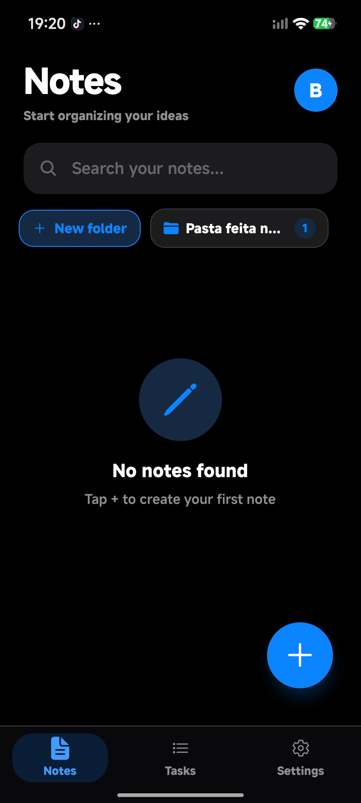
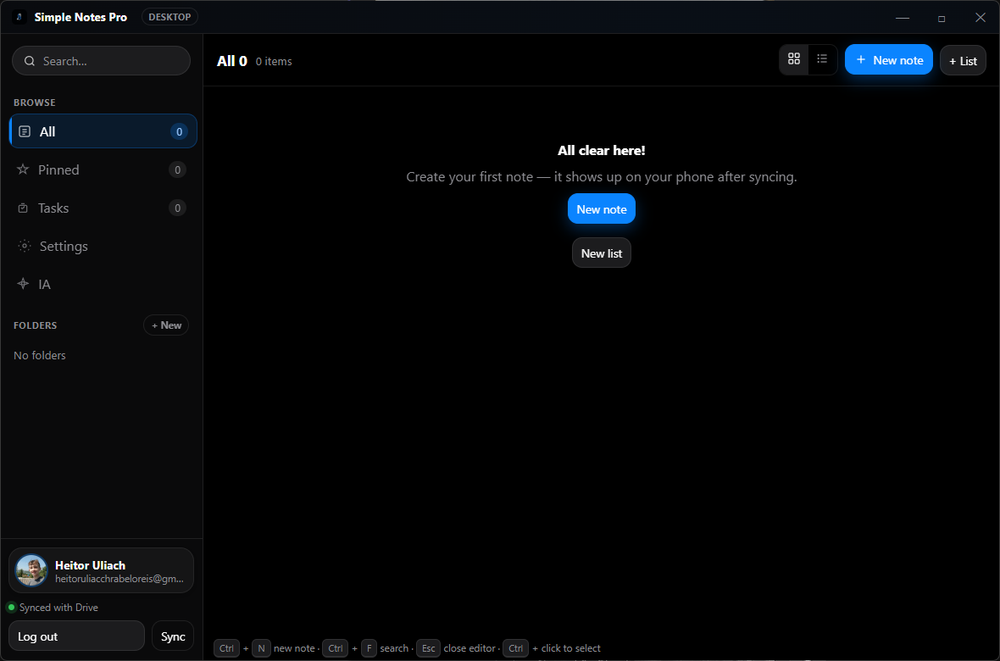

Backup automático no seu Google Drive, encriptado com AES-256 antes de sair do aparelho. No celular e no PC, sempre sincronizados.

Funciona offline. Sincroniza sozinho. Sem anúncios interrompendo o que você escreveu.
Pergunte sobre suas próprias notas e receba respostas com contexto. Resuma uma nota longa em um toque.
Backup encriptado com AES-256, biometria e PIN com trava progressiva contra tentativas.
Notas, listas, pastas, tarefas, imagens e áudios salvos no Drive em ~900ms após editar. Sem botão "salvar".
Pastas, fixar no topo, seleção múltipla e busca instantânea em todo o conteúdo.
Popup em tela cheia, volume de alarme, soneca e disparo com o app fechado.
Fotos e gravações dentro da nota, arrastáveis entre linhas.
Negrito, itálico, tachado e listas — modo leitura ao terminar.
O app inteiro — IA incluída — segue o idioma do aparelho.
Preto puro que economiza bateria e tema claro elegante.
Quatro áreas que a maioria dos apps de notas trata por alto.
Tudo vai para a pasta privada do app no seu Drive — invisível para outros apps.
Backup encriptado, biometria e trava anti tentativa — o pacote completo.
Assistente dentro do editor — com sua chave gratuita do OpenRouter.
Popup em tela cheia por cima de tudo — mesmo com o celular bloqueado.
O backup é encriptado com AES-256 antes de sair do aparelho. A chave nasce do seu email, existe só nos seus dispositivos e nunca viaja.
O mesmo app, a mesma conta, o mesmo backup. Inicia com o Windows e fica na bandeja com os alarmes ativos.

Ligou o PC? Já está aberto na bandeja — alarmes tocam na hora, mesmo em segundo plano.
Detecta a versão nova, baixa em segundo plano e instala ao fechar. Como uma loja, sem você notar.
Mesma conta Google nos dois: notas, listas, pastas e tarefas sincronizadas via Drive.